📖 07/01/21 Office Hours: Using Dictionaries (with Time Series)#
import pandas as pd
import matplotlib.pyplot as plt
import seaborn as sns
import numpy as np
import matplotlib as mpl
# !pip install statsmodels==0.11
## Statmodels time series analysis
import statsmodels.tsa.api as tsa
# !pip install -U pmdarima
import pmdarima as pmd
# help(pmd.auto_arima)
print("PACKAGE VERSIONS:")
import statsmodels
print("statstmodels: ", statsmodels.__version__)
print("pandas: ",pd.__version__)
print("numpy: ",np.__version__)
print("matplotlib: ",mpl.__version__)
print("pmdarima: ",pmd.__version__)
PACKAGE VERSIONS:
statstmodels: 0.11.1
pandas: 1.0.5
numpy: 1.18.5
matplotlib: 3.3.2
pmdarima: 1.7.1
from random import gauss
pd.set_option('precision',3)
plt.rcParams['figure.figsize'] = [12,5]
## Plotly Express
import plotly.express as px
import plotly.io as pio
pio.templates.default = "plotly_dark"
Functions from Class#
## appending folder with functions
import sys
sys.path.append("../../Phase_4/topic_38_time_series_models/")
## Functions from Last Class
%load_ext autoreload
%autoreload 2
import ts_functions as tsf
## funtionize diagnosing
def diagnose_model(model):
"""Takes a fit statsmodels model and displays the .summary
and plots the built-in plot.diagnostics()"""
display(model.summary())
model.plot_diagnostics();
plt.tight_layout()
def plot_acf_pacf(ts,figsize=(9,6),lags=52,suptitle=None,sup_y = 1.01):
"""Plot pacf and acf using statsmodels"""
fig,axes=plt.subplots(nrows=2,figsize=figsize)
tsa.graphics.plot_acf(ts,ax=axes[0],lags=lags);
tsa.graphics.plot_pacf(ts,ax=axes[1],lags=lags);
## Add grid
[ax.grid(axis='x',which='both') for ax in axes]
if suptitle is not None:
fig.suptitle(suptitle,y=sup_y,fontweight='bold',fontsize=15)
fig.tight_layout()
return fig,ax
### FORECAST SPECIFIC FUNCTIONS
def get_forecast(model,steps=12):
pred = model.get_forecast(steps=steps)
forecast = pred.conf_int()
forecast.columns = ['Lower CI','Upper CI']
forecast['Forecast'] = pred.predicted_mean
return forecast
def evaluate_model(model,ts,last_n_lags =52,steps=12):
display(model.summary())
model.plot_diagnostics();
fig,ax=plot_forecast(model,ts,future_steps=steps,last_n_lags=last_n_lags)
return fig,ax
def model_evaluation(ts_true,ts_pred,show=True,show_u_info=False):
from sklearn.metrics import mean_squared_error,r2_score
res= [['Metric','Value']]
res.append(['RMSE', np.sqrt(mean_squared_error(ts_true,ts_pred))])
res.append(['R2',r2_score(ts_true,ts_pred)])
res.append(["Thiel's U",thiels_U(ts_true,ts_pred,
display_equation=show_u_info,
display_table=show_u_info)])
res = pd.DataFrame(res[1:],columns=res[0])#fs.list2df(res)
res.set_index('Metric',inplace=True)
res=res.T
if show:
display(res)
return res
def thiels_U(ys_true=None, ys_pred=None,display_equation=True,display_table=True):
"""Calculate's Thiel's U metric for forecasting accuracy.
Accepts true values and predicted values.
Returns Thiel's U"""
from IPython.display import Markdown, Latex, display
import numpy as np
display(Markdown(""))
eqn=" $$U = \\sqrt{\\frac{ \\sum_{t=1 }^{n-1}\\left(\\frac{\\bar{Y}_{t+1} - Y_{t+1}}{Y_t}\\right)^2}{\\sum_{t=1 }^{n-1}\\left(\\frac{Y_{t+1} - Y_{t}}{Y_t}\\right)^2}}$$"
# url="['Explanation'](https://docs.oracle.com/cd/E57185_01/CBREG/ch06s02s03s04.html)"
markdown_explanation ="|Thiel's U Value | Interpretation |\n\
| --- | --- |\n\
| <1 | Forecasting is better than guessing| \n\
| 1 | Forecasting is about as good as guessing| \n\
|>1 | Forecasting is worse than guessing| \n"
if display_equation and display_table:
display(Latex(eqn),Markdown(markdown_explanation))#, Latex(eqn))
elif display_equation:
display(Latex(eqn))
elif display_table:
display(Markdown(markdown_explanation))
if ys_true is None and ys_pred is None:
return
# sum_list = []
num_list=[]
denom_list=[]
for t in range(len(ys_true)-1):
num_exp = (ys_pred[t+1] - ys_true[t+1])/ys_true[t]
num_list.append([num_exp**2])
denom_exp = (ys_true[t+1] - ys_true[t])/ys_true[t]
denom_list.append([denom_exp**2])
U = np.sqrt( np.sum(num_list) / np.sum(denom_list))
return U
def plot_forecast_vs_test(model,ts_train,ts_test,steps=None, get_metrics=True):
if steps is None:
steps = len(ts_test)
preds_df = get_forecast(model, steps=steps)
fig, ax = plt.subplots()
ts_train.plot(ax=ax,label='Training Data')
ts_test.plot(ax=ax,label='Test Data')
preds_df['Forecast'].plot(ax=ax,label='Forecast')
ax.fill_between(preds_df.index,
preds_df["Lower CI"],
preds_df["Upper CI"],
color="g", alpha=.15,
label = 'confidence interval')
ax.legend()
ax.set(title=f"Predictions for {ts_train.name}")
plt.show()
if get_metrics:
res = model_evaluation(ts_test, preds_df['Forecast'])
# res['Metric']
return res, fig,ax
def expected_roi(investment, final_value):
"""This function takes in a series of forecasts to predict the return
on investment spanning the entire forecast."""
roi = np.round(((final_value - investment) / investment)*100,3)
return roi
Loading in Time Series#
## Load in file and parse_dates, check index
file ="Zip_zhvi_uc_sfr_tier_0.33_0.67_sm_sa_mon.csv.gz"#"https://raw.githubusercontent.com/flatiron-school/Online-DS-FT-022221-Cohort-Notes/master/Phase_4/topic_37_intro_to_time_series/baltimore_crime_counts_2021.csv"
df = pd.read_csv(file)#,parse_dates=True, index_col='CrimeDateTime')
display(df.head(),df.index)
| RegionID | SizeRank | RegionName | RegionType | StateName | State | City | Metro | CountyName | 1996-01-31 | ... | 2020-08-31 | 2020-09-30 | 2020-10-31 | 2020-11-30 | 2020-12-31 | 2021-01-31 | 2021-02-28 | 2021-03-31 | 2021-04-30 | 2021-05-31 | |
|---|---|---|---|---|---|---|---|---|---|---|---|---|---|---|---|---|---|---|---|---|---|
| 0 | 61639 | 0 | 10025 | Zip | NY | NY | New York | New York-Newark-Jersey City | New York County | NaN | ... | 1.280e+06 | 1.287e+06 | 1.292e+06 | 1.296e+06 | 1.300e+06 | 1.297e+06 | 1.290e+06 | 1.286e+06 | 1.286e+06 | 1.288e+06 |
| 1 | 84654 | 1 | 60657 | Zip | IL | IL | Chicago | Chicago-Naperville-Elgin | Cook County | 471009.0 | ... | 9.951e+05 | 9.999e+05 | 1.005e+06 | 1.009e+06 | 1.012e+06 | 1.014e+06 | 1.018e+06 | 1.021e+06 | 1.027e+06 | 1.031e+06 |
| 2 | 61637 | 2 | 10023 | Zip | NY | NY | New York | New York-Newark-Jersey City | New York County | 588310.0 | ... | 1.644e+06 | 1.645e+06 | 1.653e+06 | 1.662e+06 | 1.671e+06 | 1.674e+06 | 1.677e+06 | 1.682e+06 | 1.692e+06 | 1.706e+06 |
| 3 | 91982 | 3 | 77494 | Zip | TX | TX | Katy | Houston-The Woodlands-Sugar Land | Harris County | 202494.0 | ... | 3.440e+05 | 3.456e+05 | 3.481e+05 | 3.512e+05 | 3.556e+05 | 3.600e+05 | 3.651e+05 | 3.706e+05 | 3.770e+05 | 3.839e+05 |
| 4 | 84616 | 4 | 60614 | Zip | IL | IL | Chicago | Chicago-Naperville-Elgin | Cook County | 644605.0 | ... | 1.279e+06 | 1.285e+06 | 1.291e+06 | 1.296e+06 | 1.300e+06 | 1.302e+06 | 1.308e+06 | 1.311e+06 | 1.317e+06 | 1.320e+06 |
5 rows × 314 columns
RangeIndex(start=0, stop=30809, step=1)
def melt_data(df_,new=True):
if new:
df = df_.drop(columns=['RegionType','StateName'])
else:
df = df_
melted = pd.melt(df, id_vars=['RegionID','RegionName', 'City', 'State', 'Metro', 'CountyName',
'SizeRank'], var_name='Month', value_name='MeanValue')
melted['Month'] = pd.to_datetime(melted['Month'], format='%Y-%m')
melted = melted.dropna(subset=['MeanValue'])
return melted
## Melt dataframe, set dt index
df = melt_data(df)
df['Month'] = pd.to_datetime(df['Month'])
df = df.set_index('Month').sort_index()
# df = df.loc['2010':]
df.head()
| RegionID | RegionName | City | State | Metro | CountyName | SizeRank | MeanValue | |
|---|---|---|---|---|---|---|---|---|
| Month | ||||||||
| 1996-01-31 | 84654 | 60657 | Chicago | IL | Chicago-Naperville-Elgin | Cook County | 1 | 471009.0 |
| 1996-01-31 | 61637 | 10023 | New York | NY | New York-Newark-Jersey City | New York County | 2 | 588310.0 |
| 1996-01-31 | 91982 | 77494 | Katy | TX | Houston-The Woodlands-Sugar Land | Harris County | 3 | 202494.0 |
| 1996-01-31 | 84616 | 60614 | Chicago | IL | Chicago-Naperville-Elgin | Cook County | 4 | 644605.0 |
| 1996-01-31 | 91940 | 77449 | Katy | TX | Houston-The Woodlands-Sugar Land | Harris County | 5 | 98243.0 |
## Sep MD state
md = df.groupby('State').get_group('MD')
md
| RegionID | RegionName | City | State | Metro | CountyName | SizeRank | MeanValue | |
|---|---|---|---|---|---|---|---|---|
| Month | ||||||||
| 1996-01-31 | 66843 | 21234 | Parkville | MD | Baltimore-Columbia-Towson | Baltimore County | 78 | 1.152e+05 |
| 1996-01-31 | 66705 | 20906 | Silver Spring | MD | Washington-Arlington-Alexandria | Montgomery County | 175 | 1.875e+05 |
| 1996-01-31 | 67010 | 21740 | Hagerstown | MD | Hagerstown-Martinsburg | Washington County | 220 | 9.927e+04 |
| 1996-01-31 | 66785 | 21117 | Owings Mills | MD | Baltimore-Columbia-Towson | Baltimore County | 247 | 1.682e+05 |
| 1996-01-31 | 66683 | 20878 | Gaithersburg | MD | Washington-Arlington-Alexandria | Montgomery County | 299 | 2.557e+05 |
| ... | ... | ... | ... | ... | ... | ... | ... | ... |
| 2021-05-31 | 66968 | 21670 | Sudlersville | MD | Baltimore-Columbia-Towson | Queen Annes County | 34192 | 1.967e+05 |
| 2021-05-31 | 66892 | 21522 | Grantsville | MD | NaN | Garrett County | 34322 | 1.992e+05 |
| 2021-05-31 | 66728 | 21020 | Reisterstown | MD | Baltimore-Columbia-Towson | Baltimore County | 34322 | 3.545e+05 |
| 2021-05-31 | 66905 | 21542 | Midland | MD | Cumberland | Allegany County | 34322 | 5.402e+04 |
| 2021-05-31 | 66881 | 21405 | Annapolis | MD | Baltimore-Columbia-Towson | Anne Arundel County | 34430 | 1.065e+06 |
139035 rows × 8 columns
## Make sep dfs for Baltimore City vs County
df_city = df.groupby('CountyName').get_group('Baltimore City')
df_county = df.groupby('CountyName').get_group('Baltimore County')
display(df_city.head(),df_county.head())
| RegionID | RegionName | City | State | Metro | CountyName | SizeRank | MeanValue | |
|---|---|---|---|---|---|---|---|---|
| Month | ||||||||
| 1996-01-31 | 66825 | 21215 | Baltimore | MD | Baltimore-Columbia-Towson | Baltimore City | 368 | 88187.0 |
| 1996-01-31 | 66834 | 21224 | Baltimore | MD | Baltimore-Columbia-Towson | Baltimore City | 484 | 99247.0 |
| 1996-01-31 | 66828 | 21218 | Baltimore | MD | Baltimore-Columbia-Towson | Baltimore City | 744 | 77770.0 |
| 1996-01-31 | 66816 | 21206 | Baltimore | MD | Baltimore-Columbia-Towson | Baltimore City | 783 | 87781.0 |
| 1996-01-31 | 66839 | 21229 | Baltimore | MD | Baltimore-Columbia-Towson | Baltimore City | 1088 | 90909.0 |
| RegionID | RegionName | City | State | Metro | CountyName | SizeRank | MeanValue | |
|---|---|---|---|---|---|---|---|---|
| Month | ||||||||
| 1996-01-31 | 66843 | 21234 | Parkville | MD | Baltimore-Columbia-Towson | Baltimore County | 78 | 115245.0 |
| 1996-01-31 | 66785 | 21117 | Owings Mills | MD | Baltimore-Columbia-Towson | Baltimore County | 247 | 168154.0 |
| 1996-01-31 | 66832 | 21222 | Dundalk | MD | Baltimore-Columbia-Towson | Baltimore County | 423 | 100593.0 |
| 1996-01-31 | 66838 | 21228 | Catonsville | MD | Baltimore-Columbia-Towson | Baltimore County | 861 | 142783.0 |
| 1996-01-31 | 66817 | 21207 | Lochearn | MD | Baltimore-Columbia-Towson | Baltimore County | 874 | 103016.0 |
print(f"[i] There are {df_city['RegionName'].nunique()} zipcodes in Baltimore City")
print(f"[i] There are {df_county['RegionName'].nunique()} zipcodes in Baltimore County")
[i] There are 20 zipcodes in Baltimore City
[i] There are 42 zipcodes in Baltimore County
## make a dictionary of baltimore city zips
BCTY = {}
for zipcode in df_city['RegionName'].unique():
temp = df_city.groupby("RegionName").get_group(zipcode)['MeanValue']
temp.name = zipcode
BCTY[str(zipcode)]=temp.resample('M').asfreq()
BCTY
{'21215': Month
1996-01-31 88187.0
1996-02-29 87954.0
1996-03-31 87740.0
1996-04-30 87312.0
1996-05-31 87119.0
...
2021-01-31 160810.0
2021-02-28 161258.0
2021-03-31 162256.0
2021-04-30 163150.0
2021-05-31 164894.0
Freq: M, Name: 21215, Length: 305, dtype: float64,
'21224': Month
1996-01-31 99247.0
1996-02-29 99135.0
1996-03-31 98991.0
1996-04-30 98831.0
1996-05-31 98807.0
...
2021-01-31 195686.0
2021-02-28 197302.0
2021-03-31 199505.0
2021-04-30 202326.0
2021-05-31 205285.0
Freq: M, Name: 21224, Length: 305, dtype: float64,
'21218': Month
1996-01-31 77770.0
1996-02-29 78244.0
1996-03-31 78506.0
1996-04-30 78835.0
1996-05-31 78901.0
...
2021-01-31 176393.0
2021-02-28 179169.0
2021-03-31 182285.0
2021-04-30 185686.0
2021-05-31 188921.0
Freq: M, Name: 21218, Length: 305, dtype: float64,
'21206': Month
1996-01-31 87781.0
1996-02-29 87838.0
1996-03-31 87912.0
1996-04-30 88081.0
1996-05-31 88216.0
...
2021-01-31 170497.0
2021-02-28 172493.0
2021-03-31 175080.0
2021-04-30 178300.0
2021-05-31 181780.0
Freq: M, Name: 21206, Length: 305, dtype: float64,
'21229': Month
1996-01-31 90909.0
1996-02-29 91063.0
1996-03-31 91118.0
1996-04-30 91243.0
1996-05-31 91489.0
...
2021-01-31 138931.0
2021-02-28 140073.0
2021-03-31 141664.0
2021-04-30 143538.0
2021-05-31 145771.0
Freq: M, Name: 21229, Length: 305, dtype: float64,
'21230': Month
1996-01-31 97163.0
1996-02-29 97187.0
1996-03-31 96951.0
1996-04-30 96684.0
1996-05-31 96043.0
...
2021-01-31 231235.0
2021-02-28 232830.0
2021-03-31 235483.0
2021-04-30 239066.0
2021-05-31 242871.0
Freq: M, Name: 21230, Length: 305, dtype: float64,
'21217': Month
1996-01-31 112803.0
1996-02-29 110070.0
1996-03-31 108323.0
1996-04-30 105926.0
1996-05-31 104480.0
...
2021-01-31 122997.0
2021-02-28 125463.0
2021-03-31 127760.0
2021-04-30 130758.0
2021-05-31 134979.0
Freq: M, Name: 21217, Length: 305, dtype: float64,
'21239': Month
1996-01-31 114544.0
1996-02-29 114685.0
1996-03-31 114838.0
1996-04-30 115114.0
1996-05-31 115202.0
...
2021-01-31 170922.0
2021-02-28 172574.0
2021-03-31 175255.0
2021-04-30 178477.0
2021-05-31 181359.0
Freq: M, Name: 21239, Length: 305, dtype: float64,
'21212': Month
1996-01-31 117526.0
1996-02-29 117637.0
1996-03-31 117789.0
1996-04-30 118092.0
1996-05-31 118258.0
...
2021-01-31 283177.0
2021-02-28 286108.0
2021-03-31 289232.0
2021-04-30 293163.0
2021-05-31 297435.0
Freq: M, Name: 21212, Length: 305, dtype: float64,
'21201': Month
1996-01-31 93105.0
1996-02-29 91097.0
1996-03-31 90213.0
1996-04-30 88148.0
1996-05-31 87079.0
...
2021-01-31 194529.0
2021-02-28 196736.0
2021-03-31 199598.0
2021-04-30 202759.0
2021-05-31 206490.0
Freq: M, Name: 21201, Length: 305, dtype: float64,
'21213': Month
1996-01-31 44412.0
1996-02-29 44472.0
1996-03-31 44513.0
1996-04-30 44554.0
1996-05-31 44652.0
...
2021-01-31 102646.0
2021-02-28 104016.0
2021-03-31 105673.0
2021-04-30 106712.0
2021-05-31 107909.0
Freq: M, Name: 21213, Length: 305, dtype: float64,
'21216': Month
1996-01-31 63546.0
1996-02-29 63679.0
1996-03-31 63873.0
1996-04-30 64276.0
1996-05-31 64628.0
...
2021-01-31 101476.0
2021-02-28 104195.0
2021-03-31 107051.0
2021-04-30 109073.0
2021-05-31 111407.0
Freq: M, Name: 21216, Length: 305, dtype: float64,
'21202': Month
1996-01-31 107425.0
1996-02-29 106768.0
1996-03-31 105281.0
1996-04-30 102905.0
1996-05-31 100413.0
...
2021-01-31 225370.0
2021-02-28 226932.0
2021-03-31 229648.0
2021-04-30 232981.0
2021-05-31 236753.0
Freq: M, Name: 21202, Length: 305, dtype: float64,
'21223': Month
1996-01-31 47436.0
1996-02-29 47754.0
1996-03-31 47867.0
1996-04-30 48480.0
1996-05-31 48989.0
...
2021-01-31 50119.0
2021-02-28 51187.0
2021-03-31 52561.0
2021-04-30 54356.0
2021-05-31 55907.0
Freq: M, Name: 21223, Length: 305, dtype: float64,
'21211': Month
1996-01-31 72673.0
1996-02-29 72696.0
1996-03-31 72598.0
1996-04-30 72495.0
1996-05-31 72391.0
...
2021-01-31 244002.0
2021-02-28 245403.0
2021-03-31 247668.0
2021-04-30 250500.0
2021-05-31 253255.0
Freq: M, Name: 21211, Length: 305, dtype: float64,
'21231': Month
1996-01-31 55267.0
1996-02-29 55955.0
1996-03-31 55741.0
1996-04-30 55746.0
1996-05-31 55466.0
...
2021-01-31 261957.0
2021-02-28 263468.0
2021-03-31 265950.0
2021-04-30 269140.0
2021-05-31 273108.0
Freq: M, Name: 21231, Length: 305, dtype: float64,
'21214': Month
1996-01-31 82874.0
1996-02-29 82752.0
1996-03-31 82624.0
1996-04-30 82476.0
1996-05-31 82415.0
...
2021-01-31 200830.0
2021-02-28 203227.0
2021-03-31 205909.0
2021-04-30 209039.0
2021-05-31 212604.0
Freq: M, Name: 21214, Length: 305, dtype: float64,
'21210': Month
1996-01-31 223372.0
1996-02-29 223040.0
1996-03-31 222714.0
1996-04-30 222116.0
1996-05-31 222133.0
...
2021-01-31 530226.0
2021-02-28 535558.0
2021-03-31 540156.0
2021-04-30 546703.0
2021-05-31 554352.0
Freq: M, Name: 21210, Length: 305, dtype: float64,
'21205': Month
1996-01-31 50053.0
1996-02-29 50129.0
1996-03-31 50263.0
1996-04-30 50215.0
1996-05-31 50024.0
...
2021-01-31 61184.0
2021-02-28 63173.0
2021-03-31 65064.0
2021-04-30 67236.0
2021-05-31 69501.0
Freq: M, Name: 21205, Length: 305, dtype: float64,
'21226': Month
1996-01-31 97258.0
1996-02-29 97434.0
1996-03-31 97464.0
1996-04-30 97608.0
1996-05-31 97883.0
...
2021-01-31 233915.0
2021-02-28 237020.0
2021-03-31 240118.0
2021-04-30 243849.0
2021-05-31 247025.0
Freq: M, Name: 21226, Length: 305, dtype: float64}
## pulling out individual zipcode
ts = BCTY['21201'].copy()
ax = ts.plot()
ax.legend()
<matplotlib.legend.Legend at 0x7fb53d5061d0>
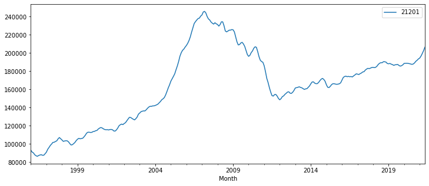
ts.index
DatetimeIndex(['1996-01-31', '1996-02-29', '1996-03-31', '1996-04-30',
'1996-05-31', '1996-06-30', '1996-07-31', '1996-08-31',
'1996-09-30', '1996-10-31',
...
'2020-08-31', '2020-09-30', '2020-10-31', '2020-11-30',
'2020-12-31', '2021-01-31', '2021-02-28', '2021-03-31',
'2021-04-30', '2021-05-31'],
dtype='datetime64[ns]', name='Month', length=305, freq='M')
Train-Test-Split for Time Series#
# get the tts_cutoff (the # of timesteps/rows to split at)
tts_cutoff = round(ts.shape[0]*0.80)
tts_cutoff_date = ts.index[tts_cutoff]
print("integer cutoff index: ",tts_cutoff)
print("corresponding cutoff date: ",tts_cutoff_date)
integer cutoff index: 244
corresponding cutoff date: 2016-05-31 00:00:00
## Use the tts cutoff to do Train test split and plot
train = ts.iloc[:tts_cutoff]
test = ts.iloc[tts_cutoff:]
## Plot
ax = train.plot(label='train',title=train.name,)
ax.axvline(tts_cutoff_date, ls=":",c='k',
label=tts_cutoff_date.strftime("%m-%Y"),
)
test.plot(label='test')
ax.legend()
<matplotlib.legend.Legend at 0x7fb49b1cbd30>
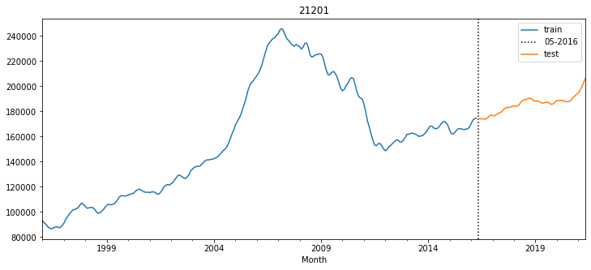
def train_test_split_ts(ts,split=0.80,plot=True,verbose=False):
# get the tts_cutoff (the # of timesteps/rows to split at)
tts_cutoff = round(ts.shape[0]*split)
tts_cutoff_date = ts.index[tts_cutoff]
if verbose:
print("integer cutoff index: ",tts_cutoff)
print("corresponding cutoff date: ",tts_cutoff_date)
train = ts.iloc[:tts_cutoff]
test = ts.iloc[tts_cutoff:]
if plot:
## Plot
ax = train.plot(label='train',title=train.name,)
ax.axvline(tts_cutoff_date, ls=":",c='k',
label=tts_cutoff_date.strftime("%m-%Y"),
)
test.plot(label='test')
ax.set_title(ts.name)
ax.legend()
return train, test
train,test = train_test_split_ts(ts)
## check staationarity
tsf.stationarity_check(train, window=4)
| Test Statistic | #Lags Used | # of Observations Used | p-value | p<.05 | Stationary? | |
|---|---|---|---|---|---|---|
| AD Fuller Results | -1.549 | 14 | 229 | 0.509 | False | False |
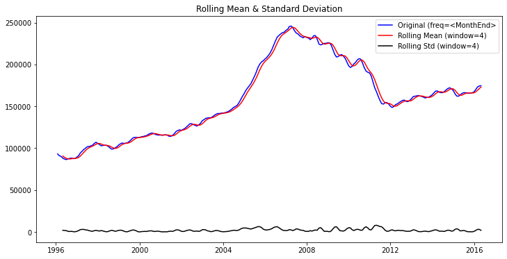
| Test Statistic | #Lags Used | # of Observations Used | p-value | p<.05 | Stationary? | |
|---|---|---|---|---|---|---|
| AD Fuller Results | -1.549 | 14 | 229 | 0.509 | False | False |
### Check PACF/ACF to infer p/q (if possible)
plot_acf_pacf(train)
/opt/anaconda3/envs/learn-env/lib/python3.6/site-packages/statsmodels/regression/linear_model.py:1406: RuntimeWarning:
invalid value encountered in sqrt
(<Figure size 648x432 with 2 Axes>,
<AxesSubplot:title={'center':'21201'}, xlabel='Month'>)
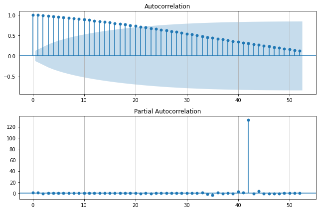
### Check PACF/ACF to infer p/q (if possible)
plot_acf_pacf(train.diff().dropna())
/opt/anaconda3/envs/learn-env/lib/python3.6/site-packages/statsmodels/regression/linear_model.py:1406: RuntimeWarning:
invalid value encountered in sqrt
(<Figure size 648x432 with 2 Axes>,
<AxesSubplot:title={'center':'21201'}, xlabel='Month'>)
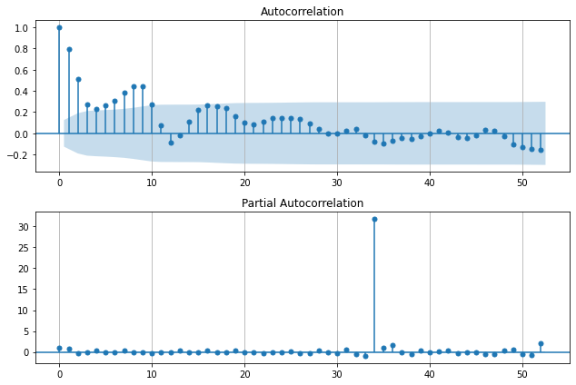
### Check PACF/ACF to infer p/q (if possible)
plot_acf_pacf(train.diff(1).diff(12).dropna())
/opt/anaconda3/envs/learn-env/lib/python3.6/site-packages/statsmodels/regression/linear_model.py:1406: RuntimeWarning:
invalid value encountered in sqrt
(<Figure size 648x432 with 2 Axes>,
<AxesSubplot:title={'center':'21201'}, xlabel='Month'>)
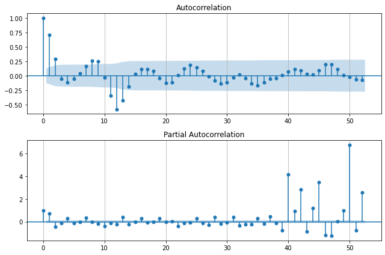
Possible values:
p:
d:
q:
## Use Seasonal Decompose to check for seasonality
decomp = tsa.seasonal_decompose(train)
decomp.plot();
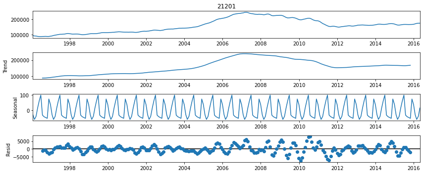
NOTE: I removed the use of any functions from the rest of the workflow in order to make it more transparent as to what we are doing. - I HIGHLY recommend functionizing a lot of longer blocks of code that you will need to repeat for each model/zipcode/stock.
# ## Gridsearch params
# auto_model = pmd.auto_arima(train,start_p=0,max_p=5,
# start_q=0,max_q=5,d=1,m=12,
# start_P=0,start_Q=0,maxiter=300,
# verbose=True,trace=True)
# display(auto_model.summary())
# ## Fit a final model and evaluate
# best_model = tsa.SARIMAX(train,order=auto_model.order,
# seasonal_order = auto_model.seasonal_order,
# enforce_invertibility=False,
# enforce_stationarity=True).fit()
# ## Display Summary + Diagnostics
# display(best_model.summary())
# best_model.plot_diagnostics();
# plt.tight_layout()
# res,_,_= plot_forecast_vs_test(best_model,train,test)
# ## If happy with the model's test perforamance, retrain on entire ts and forecast into future
# ## Fit a final model and evaluate
# final_model = tsa.SARIMAX(ts,order=auto_model.order,
# seasonal_order = auto_model.seasonal_order,
# enforce_invertibility=False).fit()
# ## Display Summary + Diagnostics
# display(final_model.summary())
# final_model.plot_diagnostics();
# plt.tight_layout()
def plot_future_forecast(model,ts,last_n_lags=None,
future_steps=12,
):
if last_n_lags is None:
last_n_lags = len(ts)
forecast_df = get_forecast(model,steps=future_steps)
fig,ax = plt.subplots(figsize=(12,5))
ts.iloc[-last_n_lags:].plot(label='True Data')
ax.axvline(forecast_df.index[0],ls=":",c='k')
forecast_df['Forecast'].plot(ax=ax)
ax.fill_between(forecast_df.index,
forecast_df['Lower CI'], forecast_df['Upper CI'],alpha=0.6)
ax.legend()
ax.set(title=f'Forecasted {ts.name}')
# if get_roi:
roi = expected_roi_from_forecast_df(forecast_df)
roi.reset_index(inplace=True)
roi.rename({'index':'Sale Date'},axis=1,inplace=True)
roi.index=[ts.name]
roi = roi[['Investment Cost','Sale Date','Forecast','Lower CI','Upper CI']]
display(roi)
return fig,roi
def expected_roi_from_forecast_df(preds_df):
preds_df.sort_index(ascending=True,inplace=True)
investment = preds_df['Forecast'].iloc[0]
roi_df = np.round((preds_df - investment )/investment*100,3)
roi_df['Investment Cost'] = investment
roi = roi_df.iloc[-1].to_frame().T
return roi
# RESULTS = {}
# fig,roi = plot_future_forecast(final_model,ts,last_n_lags=12*10,future_steps=24);
# RESULTS[ts.name] = {'fig':fig,'ROI':roi}
BCTY.keys()
dict_keys(['21215', '21224', '21218', '21206', '21229', '21230', '21217', '21239', '21212', '21201', '21213', '21216', '21202', '21223', '21211', '21231', '21214', '21210', '21205', '21226'])
Moddeling Loop with Dictionary-Saved Results#
RESULTS = {}
for zipcode in ['21201','21202','21215', '21224', '21218',]: ## pulling out individual zipcode
## Make emoty dict for zipcode's results
zipcode_results = {}
print('==='*20)
print(f'[i] GRIDSEARCHING FOR {ts.name}:')
ts = BCTY[zipcode].copy()
train,test = train_test_split_ts(ts)
plt.show()
#### GRISEARCHING BEST PARAMS
auto_model = pmd.auto_arima(train,start_p=0,max_p=5,
start_q=0,max_q=5,d=1,m=12,
start_P=0,start_Q=0,maxiter=150,
verbose=True,trace=False)
## Fit SARIMAX with best parmas and compare forecast vs test
best_model = tsa.SARIMAX(train,order=auto_model.order,
seasonal_order = auto_model.seasonal_order,
enforce_invertibility=False,
enforce_stationarity=True).fit()
## Display Summary + Diagnostics
display(best_model.summary())
best_model.plot_diagnostics();
plt.tight_layout();
## Get tts forecast comparison
res,tts_fig,ax = plot_forecast_vs_test(best_model,train,test)
print('\t- TRAINING FINAL MODEL:')
## If happy with the model's test perforamance, retrain on entire ts and forecast into future
## Fit a final model and evaluate
final_model = tsa.SARIMAX(ts,order=auto_model.order,
seasonal_order = auto_model.seasonal_order,
enforce_invertibility=False).fit()
## Display Summary + Diagnostics
display(final_model.summary())
final_model.plot_diagnostics();
plt.tight_layout()
## save final model
forecast_fig, roi_df = plot_future_forecast(final_model,ts,
last_n_lags=12*10,
future_steps=24);
plt.show()
display(roi_df)
## Fill in results and
zipcode_results['tts_fig']= tts_fig
zipcode_results['final_model'] = final_model
zipcode_results['forecast'] = forecast_fig
zipcode_results['roi'] = roi_df
# del forecst_fig, tts_fig,roi_df
## Saving zipcode results to RESULTS dict
RESULTS[zipcode] = zipcode_results
print("\n\n")
============================================================
[i] GRIDSEARCHING FOR 21201:
/opt/anaconda3/envs/learn-env/lib/python3.6/site-packages/statsmodels/tsa/statespace/sarimax.py:975: UserWarning:
Non-invertible starting MA parameters found. Using zeros as starting parameters.
/opt/anaconda3/envs/learn-env/lib/python3.6/site-packages/statsmodels/base/model.py:568: ConvergenceWarning:
Maximum Likelihood optimization failed to converge. Check mle_retvals
| Dep. Variable: | 21201 | No. Observations: | 244 |
|---|---|---|---|
| Model: | SARIMAX(2, 1, 1)x(0, 0, 1, 12) | Log Likelihood | -2196.268 |
| Date: | Fri, 02 Jul 2021 | AIC | 4402.536 |
| Time: | 13:00:34 | BIC | 4420.001 |
| Sample: | 01-31-1996 | HQIC | 4409.570 |
| - 04-30-2016 | |||
| Covariance Type: | opg |
| coef | std err | z | P>|z| | [0.025 | 0.975] | |
|---|---|---|---|---|---|---|
| ar.L1 | 0.9503 | 0.069 | 13.826 | 0.000 | 0.816 | 1.085 |
| ar.L2 | -0.0375 | 0.016 | -2.386 | 0.017 | -0.068 | -0.007 |
| ma.L1 | -0.8721 | 0.069 | -12.684 | 0.000 | -1.007 | -0.737 |
| ma.S.L12 | -0.0284 | 0.018 | -1.573 | 0.116 | -0.064 | 0.007 |
| sigma2 | 3.981e+06 | 6.68e-09 | 5.96e+14 | 0.000 | 3.98e+06 | 3.98e+06 |
| Ljung-Box (Q): | 353.57 | Jarque-Bera (JB): | 58.06 |
|---|---|---|---|
| Prob(Q): | 0.00 | Prob(JB): | 0.00 |
| Heteroskedasticity (H): | 1.82 | Skew: | -0.93 |
| Prob(H) (two-sided): | 0.01 | Kurtosis: | 4.51 |
Warnings:
[1] Covariance matrix calculated using the outer product of gradients (complex-step).
[2] Covariance matrix is singular or near-singular, with condition number 7.32e+30. Standard errors may be unstable.
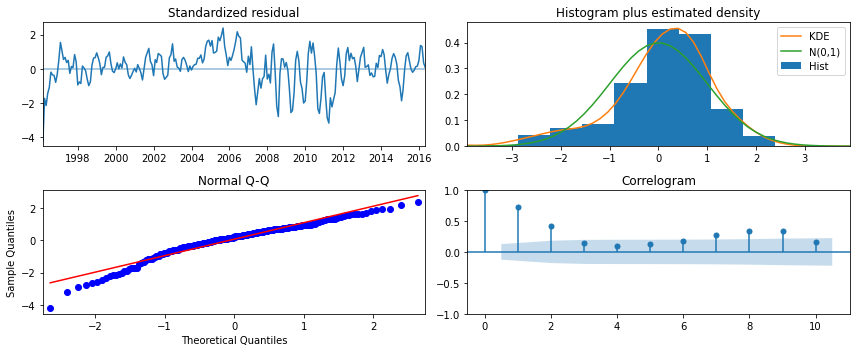
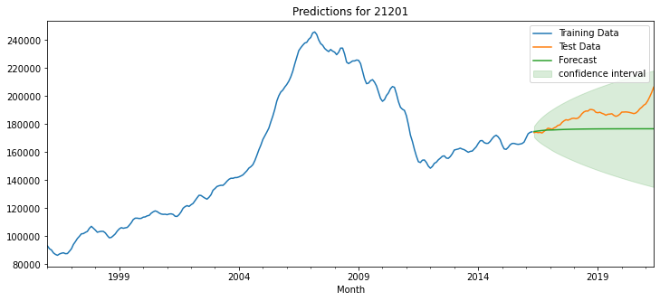
<IPython.core.display.Markdown object>
| Metric | RMSE | R2 | Thiel's U |
|---|---|---|---|
| Value | 11391.101 | -1.774 | 9.996 |
- TRAINING FINAL MODEL:
/opt/anaconda3/envs/learn-env/lib/python3.6/site-packages/statsmodels/base/model.py:568: ConvergenceWarning:
Maximum Likelihood optimization failed to converge. Check mle_retvals
| Dep. Variable: | 21201 | No. Observations: | 305 |
|---|---|---|---|
| Model: | SARIMAX(2, 1, 1)x(0, 0, 1, 12) | Log Likelihood | -2727.648 |
| Date: | Fri, 02 Jul 2021 | AIC | 5465.296 |
| Time: | 13:00:36 | BIC | 5483.881 |
| Sample: | 01-31-1996 | HQIC | 5472.731 |
| - 05-31-2021 | |||
| Covariance Type: | opg |
| coef | std err | z | P>|z| | [0.025 | 0.975] | |
|---|---|---|---|---|---|---|
| ar.L1 | 1.1076 | 0.009 | 118.565 | 0.000 | 1.089 | 1.126 |
| ar.L2 | -0.1130 | 0.007 | -15.238 | 0.000 | -0.128 | -0.099 |
| ma.L1 | -0.9868 | 0.006 | -152.684 | 0.000 | -0.999 | -0.974 |
| ma.S.L12 | -0.0131 | 0.023 | -0.559 | 0.576 | -0.059 | 0.033 |
| sigma2 | 3.391e+06 | 5.6e-10 | 6.06e+15 | 0.000 | 3.39e+06 | 3.39e+06 |
| Ljung-Box (Q): | 453.50 | Jarque-Bera (JB): | 333.06 |
|---|---|---|---|
| Prob(Q): | 0.00 | Prob(JB): | 0.00 |
| Heteroskedasticity (H): | 0.59 | Skew: | -1.34 |
| Prob(H) (two-sided): | 0.01 | Kurtosis: | 7.38 |
Warnings:
[1] Covariance matrix calculated using the outer product of gradients (complex-step).
[2] Covariance matrix is singular or near-singular, with condition number 5.41e+31. Standard errors may be unstable.
| Investment Cost | Sale Date | Forecast | Lower CI | Upper CI | |
|---|---|---|---|---|---|
| 21201 | 207108.276 | 2023-05-31 | 2.101 | -8.171 | 12.374 |
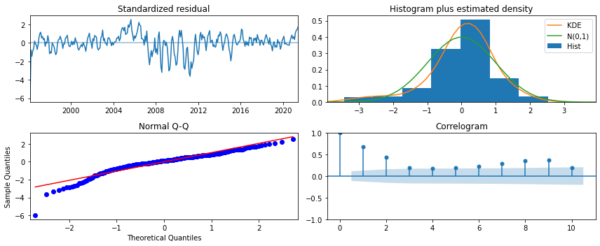
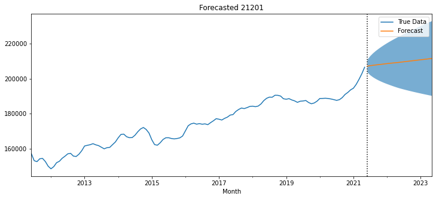
| Investment Cost | Sale Date | Forecast | Lower CI | Upper CI | |
|---|---|---|---|---|---|
| 21201 | 207108.276 | 2023-05-31 | 2.101 | -8.171 | 12.374 |
============================================================
[i] GRIDSEARCHING FOR 21201:
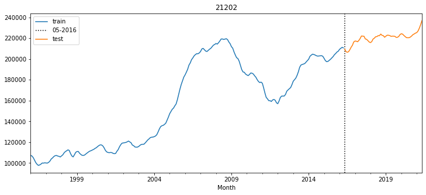
| Dep. Variable: | 21202 | No. Observations: | 244 |
|---|---|---|---|
| Model: | SARIMAX(2, 1, 1) | Log Likelihood | -2149.232 |
| Date: | Fri, 02 Jul 2021 | AIC | 4306.465 |
| Time: | 13:00:56 | BIC | 4320.437 |
| Sample: | 01-31-1996 | HQIC | 4312.093 |
| - 04-30-2016 | |||
| Covariance Type: | opg |
| coef | std err | z | P>|z| | [0.025 | 0.975] | |
|---|---|---|---|---|---|---|
| ar.L1 | 0.6766 | 0.025 | 26.582 | 0.000 | 0.627 | 0.726 |
| ar.L2 | -0.0094 | 0.008 | -1.211 | 0.226 | -0.025 | 0.006 |
| ma.L1 | -1.6474 | 0.070 | -23.438 | 0.000 | -1.785 | -1.510 |
| sigma2 | 9.693e+05 | 6.77e-08 | 1.43e+13 | 0.000 | 9.69e+05 | 9.69e+05 |
| Ljung-Box (Q): | 498.87 | Jarque-Bera (JB): | 30.77 |
|---|---|---|---|
| Prob(Q): | 0.00 | Prob(JB): | 0.00 |
| Heteroskedasticity (H): | 1.31 | Skew: | -0.57 |
| Prob(H) (two-sided): | 0.23 | Kurtosis: | 4.31 |
Warnings:
[1] Covariance matrix calculated using the outer product of gradients (complex-step).
[2] Covariance matrix is singular or near-singular, with condition number 1.18e+29. Standard errors may be unstable.
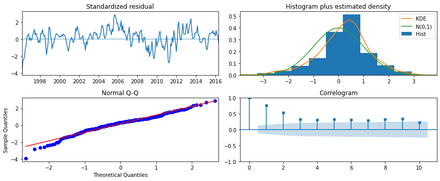
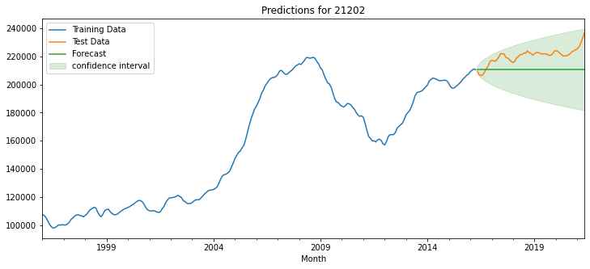
<IPython.core.display.Markdown object>
| Metric | RMSE | R2 | Thiel's U |
|---|---|---|---|
| Value | 10967.275 | -3.08 | 7.706 |
- TRAINING FINAL MODEL:
/opt/anaconda3/envs/learn-env/lib/python3.6/site-packages/statsmodels/tsa/statespace/sarimax.py:963: UserWarning:
Non-stationary starting autoregressive parameters found. Using zeros as starting parameters.
| Dep. Variable: | 21202 | No. Observations: | 305 |
|---|---|---|---|
| Model: | SARIMAX(2, 1, 1) | Log Likelihood | -2676.493 |
| Date: | Fri, 02 Jul 2021 | AIC | 5360.987 |
| Time: | 13:00:57 | BIC | 5375.855 |
| Sample: | 01-31-1996 | HQIC | 5366.934 |
| - 05-31-2021 | |||
| Covariance Type: | opg |
| coef | std err | z | P>|z| | [0.025 | 0.975] | |
|---|---|---|---|---|---|---|
| ar.L1 | 0.7269 | 0.024 | 30.452 | 0.000 | 0.680 | 0.774 |
| ar.L2 | -0.0196 | 0.007 | -2.733 | 0.006 | -0.034 | -0.006 |
| ma.L1 | -1.5481 | 0.059 | -26.353 | 0.000 | -1.663 | -1.433 |
| sigma2 | 1.006e+06 | 5.29e-08 | 1.9e+13 | 0.000 | 1.01e+06 | 1.01e+06 |
| Ljung-Box (Q): | 474.92 | Jarque-Bera (JB): | 59.17 |
|---|---|---|---|
| Prob(Q): | 0.00 | Prob(JB): | 0.00 |
| Heteroskedasticity (H): | 0.86 | Skew: | -0.60 |
| Prob(H) (two-sided): | 0.46 | Kurtosis: | 4.80 |
Warnings:
[1] Covariance matrix calculated using the outer product of gradients (complex-step).
[2] Covariance matrix is singular or near-singular, with condition number 2.81e+28. Standard errors may be unstable.
| Investment Cost | Sale Date | Forecast | Lower CI | Upper CI | |
|---|---|---|---|---|---|
| 21202 | 237262.441 | 2023-05-31 | 0.412 | -7.029 | 7.854 |
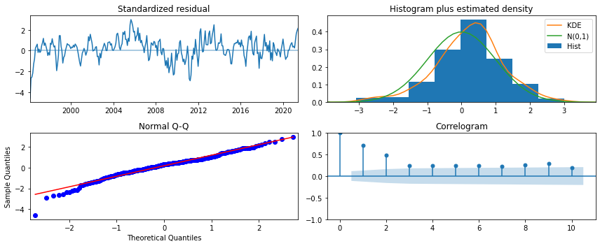
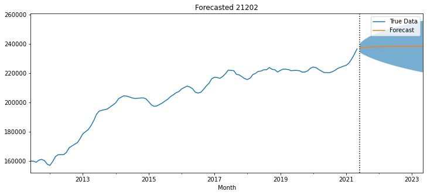
| Investment Cost | Sale Date | Forecast | Lower CI | Upper CI | |
|---|---|---|---|---|---|
| 21202 | 237262.441 | 2023-05-31 | 0.412 | -7.029 | 7.854 |
============================================================
[i] GRIDSEARCHING FOR 21202:
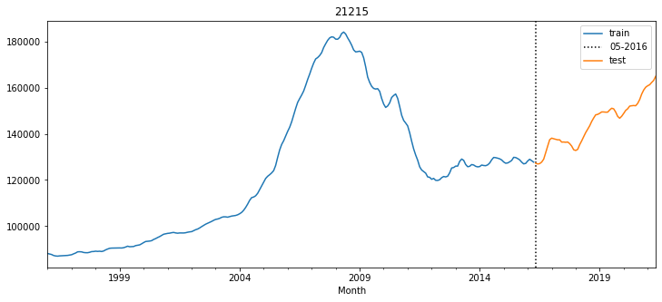
/opt/anaconda3/envs/learn-env/lib/python3.6/site-packages/statsmodels/tsa/statespace/sarimax.py:975: UserWarning:
Non-invertible starting MA parameters found. Using zeros as starting parameters.
/opt/anaconda3/envs/learn-env/lib/python3.6/site-packages/statsmodels/tsa/statespace/sarimax.py:975: UserWarning:
Non-invertible starting MA parameters found. Using zeros as starting parameters.
/opt/anaconda3/envs/learn-env/lib/python3.6/site-packages/statsmodels/tsa/statespace/sarimax.py:963: UserWarning:
Non-stationary starting autoregressive parameters found. Using zeros as starting parameters.
/opt/anaconda3/envs/learn-env/lib/python3.6/site-packages/statsmodels/tsa/statespace/sarimax.py:975: UserWarning:
Non-invertible starting MA parameters found. Using zeros as starting parameters.
/opt/anaconda3/envs/learn-env/lib/python3.6/site-packages/statsmodels/tsa/statespace/sarimax.py:963: UserWarning:
Non-stationary starting autoregressive parameters found. Using zeros as starting parameters.
/opt/anaconda3/envs/learn-env/lib/python3.6/site-packages/statsmodels/tsa/statespace/sarimax.py:975: UserWarning:
Non-invertible starting MA parameters found. Using zeros as starting parameters.
/opt/anaconda3/envs/learn-env/lib/python3.6/site-packages/statsmodels/tsa/statespace/sarimax.py:963: UserWarning:
Non-stationary starting autoregressive parameters found. Using zeros as starting parameters.
/opt/anaconda3/envs/learn-env/lib/python3.6/site-packages/statsmodels/tsa/statespace/sarimax.py:975: UserWarning:
Non-invertible starting MA parameters found. Using zeros as starting parameters.
/opt/anaconda3/envs/learn-env/lib/python3.6/site-packages/statsmodels/tsa/statespace/sarimax.py:963: UserWarning:
Non-stationary starting autoregressive parameters found. Using zeros as starting parameters.
/opt/anaconda3/envs/learn-env/lib/python3.6/site-packages/statsmodels/tsa/statespace/sarimax.py:975: UserWarning:
Non-invertible starting MA parameters found. Using zeros as starting parameters.
/opt/anaconda3/envs/learn-env/lib/python3.6/site-packages/statsmodels/base/model.py:568: ConvergenceWarning:
Maximum Likelihood optimization failed to converge. Check mle_retvals
/opt/anaconda3/envs/learn-env/lib/python3.6/site-packages/statsmodels/tsa/statespace/sarimax.py:963: UserWarning:
Non-stationary starting autoregressive parameters found. Using zeros as starting parameters.
/opt/anaconda3/envs/learn-env/lib/python3.6/site-packages/statsmodels/tsa/statespace/sarimax.py:975: UserWarning:
Non-invertible starting MA parameters found. Using zeros as starting parameters.
/opt/anaconda3/envs/learn-env/lib/python3.6/site-packages/statsmodels/tsa/statespace/sarimax.py:963: UserWarning:
Non-stationary starting autoregressive parameters found. Using zeros as starting parameters.
/opt/anaconda3/envs/learn-env/lib/python3.6/site-packages/statsmodels/tsa/statespace/sarimax.py:975: UserWarning:
Non-invertible starting MA parameters found. Using zeros as starting parameters.
/opt/anaconda3/envs/learn-env/lib/python3.6/site-packages/pmdarima/arima/_auto_solvers.py:437: ModelFitWarning:
Error fitting ARIMA(2,1,3)(2,0,1)[12] (if you do not want to see these warnings, run with error_action="ignore").
Traceback:
Traceback (most recent call last):
File "/opt/anaconda3/envs/learn-env/lib/python3.6/site-packages/pmdarima/arima/_auto_solvers.py", line 421, in _fit_candidate_model
fit.fit(x, exogenous=xreg, **fit_params)
File "/opt/anaconda3/envs/learn-env/lib/python3.6/site-packages/pmdarima/arima/arima.py", line 472, in fit
self._fit(y, exogenous, **fit_args)
File "/opt/anaconda3/envs/learn-env/lib/python3.6/site-packages/pmdarima/arima/arima.py", line 397, in _fit
fit, self.arima_res_ = _fit_wrapper()
File "/opt/anaconda3/envs/learn-env/lib/python3.6/site-packages/pmdarima/arima/arima.py", line 389, in _fit_wrapper
**fit_args)
File "/opt/anaconda3/envs/learn-env/lib/python3.6/site-packages/statsmodels/tsa/statespace/mlemodel.py", line 659, in fit
skip_hessian=True, **kwargs)
File "/opt/anaconda3/envs/learn-env/lib/python3.6/site-packages/statsmodels/base/model.py", line 526, in fit
full_output=full_output)
File "/opt/anaconda3/envs/learn-env/lib/python3.6/site-packages/statsmodels/base/optimizer.py", line 218, in _fit
hess=hessian)
File "/opt/anaconda3/envs/learn-env/lib/python3.6/site-packages/statsmodels/base/optimizer.py", line 440, in _fit_lbfgs
**extra_kwargs)
File "/Users/jamesirving/.local/lib/python3.6/site-packages/scipy/optimize/lbfgsb.py", line 198, in fmin_l_bfgs_b
**opts)
File "/Users/jamesirving/.local/lib/python3.6/site-packages/scipy/optimize/lbfgsb.py", line 360, in _minimize_lbfgsb
f, g = func_and_grad(x)
File "/Users/jamesirving/.local/lib/python3.6/site-packages/scipy/optimize/_differentiable_functions.py", line 201, in fun_and_grad
self._update_grad()
File "/Users/jamesirving/.local/lib/python3.6/site-packages/scipy/optimize/_differentiable_functions.py", line 171, in _update_grad
self._update_grad_impl()
File "/Users/jamesirving/.local/lib/python3.6/site-packages/scipy/optimize/_differentiable_functions.py", line 92, in update_grad
**finite_diff_options)
File "/Users/jamesirving/.local/lib/python3.6/site-packages/scipy/optimize/_numdiff.py", line 427, in approx_derivative
use_one_sided, method)
File "/Users/jamesirving/.local/lib/python3.6/site-packages/scipy/optimize/_numdiff.py", line 497, in _dense_difference
df = fun(x) - f0
File "/Users/jamesirving/.local/lib/python3.6/site-packages/scipy/optimize/_numdiff.py", line 377, in fun_wrapped
f = np.atleast_1d(fun(x, *args, **kwargs))
File "/Users/jamesirving/.local/lib/python3.6/site-packages/scipy/optimize/_differentiable_functions.py", line 70, in fun_wrapped
return fun(x, *args)
File "/opt/anaconda3/envs/learn-env/lib/python3.6/site-packages/statsmodels/base/model.py", line 500, in f
return -self.loglike(params, *args) / nobs
File "/opt/anaconda3/envs/learn-env/lib/python3.6/site-packages/statsmodels/tsa/statespace/mlemodel.py", line 889, in loglike
loglike = self.ssm.loglike(complex_step=complex_step, **kwargs)
File "/opt/anaconda3/envs/learn-env/lib/python3.6/site-packages/statsmodels/tsa/statespace/kalman_filter.py", line 977, in loglike
kfilter = self._filter(**kwargs)
File "/opt/anaconda3/envs/learn-env/lib/python3.6/site-packages/statsmodels/tsa/statespace/kalman_filter.py", line 897, in _filter
self._initialize_state(prefix=prefix, complex_step=complex_step)
File "/opt/anaconda3/envs/learn-env/lib/python3.6/site-packages/statsmodels/tsa/statespace/representation.py", line 950, in _initialize_state
complex_step=complex_step)
File "statsmodels/tsa/statespace/_representation.pyx", line 1341, in statsmodels.tsa.statespace._representation.dStatespace.initialize
File "statsmodels/tsa/statespace/_representation.pyx", line 1334, in statsmodels.tsa.statespace._representation.dStatespace.initialize
File "statsmodels/tsa/statespace/_initialization.pyx", line 288, in statsmodels.tsa.statespace._initialization.dInitialization.initialize
File "statsmodels/tsa/statespace/_initialization.pyx", line 406, in statsmodels.tsa.statespace._initialization.dInitialization.initialize_stationary_stationary_cov
File "statsmodels/tsa/statespace/_tools.pyx", line 1206, in statsmodels.tsa.statespace._tools._dsolve_discrete_lyapunov
numpy.linalg.LinAlgError: LU decomposition error.
/opt/anaconda3/envs/learn-env/lib/python3.6/site-packages/statsmodels/tsa/statespace/sarimax.py:963: UserWarning:
Non-stationary starting autoregressive parameters found. Using zeros as starting parameters.
/opt/anaconda3/envs/learn-env/lib/python3.6/site-packages/statsmodels/tsa/statespace/sarimax.py:975: UserWarning:
Non-invertible starting MA parameters found. Using zeros as starting parameters.
/opt/anaconda3/envs/learn-env/lib/python3.6/site-packages/statsmodels/tsa/statespace/sarimax.py:963: UserWarning:
Non-stationary starting autoregressive parameters found. Using zeros as starting parameters.
/opt/anaconda3/envs/learn-env/lib/python3.6/site-packages/statsmodels/tsa/statespace/sarimax.py:975: UserWarning:
Non-invertible starting MA parameters found. Using zeros as starting parameters.
/opt/anaconda3/envs/learn-env/lib/python3.6/site-packages/statsmodels/tsa/statespace/sarimax.py:963: UserWarning:
Non-stationary starting autoregressive parameters found. Using zeros as starting parameters.
/opt/anaconda3/envs/learn-env/lib/python3.6/site-packages/statsmodels/tsa/statespace/sarimax.py:975: UserWarning:
Non-invertible starting MA parameters found. Using zeros as starting parameters.
/opt/anaconda3/envs/learn-env/lib/python3.6/site-packages/pmdarima/arima/_auto_solvers.py:437: ModelFitWarning:
Error fitting ARIMA(3,1,4)(1,0,0)[12] (if you do not want to see these warnings, run with error_action="ignore").
Traceback:
Traceback (most recent call last):
File "/opt/anaconda3/envs/learn-env/lib/python3.6/site-packages/pmdarima/arima/_auto_solvers.py", line 421, in _fit_candidate_model
fit.fit(x, exogenous=xreg, **fit_params)
File "/opt/anaconda3/envs/learn-env/lib/python3.6/site-packages/pmdarima/arima/arima.py", line 472, in fit
self._fit(y, exogenous, **fit_args)
File "/opt/anaconda3/envs/learn-env/lib/python3.6/site-packages/pmdarima/arima/arima.py", line 397, in _fit
fit, self.arima_res_ = _fit_wrapper()
File "/opt/anaconda3/envs/learn-env/lib/python3.6/site-packages/pmdarima/arima/arima.py", line 389, in _fit_wrapper
**fit_args)
File "/opt/anaconda3/envs/learn-env/lib/python3.6/site-packages/statsmodels/tsa/statespace/mlemodel.py", line 659, in fit
skip_hessian=True, **kwargs)
File "/opt/anaconda3/envs/learn-env/lib/python3.6/site-packages/statsmodels/base/model.py", line 526, in fit
full_output=full_output)
File "/opt/anaconda3/envs/learn-env/lib/python3.6/site-packages/statsmodels/base/optimizer.py", line 218, in _fit
hess=hessian)
File "/opt/anaconda3/envs/learn-env/lib/python3.6/site-packages/statsmodels/base/optimizer.py", line 440, in _fit_lbfgs
**extra_kwargs)
File "/Users/jamesirving/.local/lib/python3.6/site-packages/scipy/optimize/lbfgsb.py", line 198, in fmin_l_bfgs_b
**opts)
File "/Users/jamesirving/.local/lib/python3.6/site-packages/scipy/optimize/lbfgsb.py", line 360, in _minimize_lbfgsb
f, g = func_and_grad(x)
File "/Users/jamesirving/.local/lib/python3.6/site-packages/scipy/optimize/_differentiable_functions.py", line 201, in fun_and_grad
self._update_grad()
File "/Users/jamesirving/.local/lib/python3.6/site-packages/scipy/optimize/_differentiable_functions.py", line 171, in _update_grad
self._update_grad_impl()
File "/Users/jamesirving/.local/lib/python3.6/site-packages/scipy/optimize/_differentiable_functions.py", line 92, in update_grad
**finite_diff_options)
File "/Users/jamesirving/.local/lib/python3.6/site-packages/scipy/optimize/_numdiff.py", line 427, in approx_derivative
use_one_sided, method)
File "/Users/jamesirving/.local/lib/python3.6/site-packages/scipy/optimize/_numdiff.py", line 497, in _dense_difference
df = fun(x) - f0
File "/Users/jamesirving/.local/lib/python3.6/site-packages/scipy/optimize/_numdiff.py", line 377, in fun_wrapped
f = np.atleast_1d(fun(x, *args, **kwargs))
File "/Users/jamesirving/.local/lib/python3.6/site-packages/scipy/optimize/_differentiable_functions.py", line 70, in fun_wrapped
return fun(x, *args)
File "/opt/anaconda3/envs/learn-env/lib/python3.6/site-packages/statsmodels/base/model.py", line 500, in f
return -self.loglike(params, *args) / nobs
File "/opt/anaconda3/envs/learn-env/lib/python3.6/site-packages/statsmodels/tsa/statespace/mlemodel.py", line 889, in loglike
loglike = self.ssm.loglike(complex_step=complex_step, **kwargs)
File "/opt/anaconda3/envs/learn-env/lib/python3.6/site-packages/statsmodels/tsa/statespace/kalman_filter.py", line 977, in loglike
kfilter = self._filter(**kwargs)
File "/opt/anaconda3/envs/learn-env/lib/python3.6/site-packages/statsmodels/tsa/statespace/kalman_filter.py", line 897, in _filter
self._initialize_state(prefix=prefix, complex_step=complex_step)
File "/opt/anaconda3/envs/learn-env/lib/python3.6/site-packages/statsmodels/tsa/statespace/representation.py", line 950, in _initialize_state
complex_step=complex_step)
File "statsmodels/tsa/statespace/_representation.pyx", line 1341, in statsmodels.tsa.statespace._representation.dStatespace.initialize
File "statsmodels/tsa/statespace/_representation.pyx", line 1334, in statsmodels.tsa.statespace._representation.dStatespace.initialize
File "statsmodels/tsa/statespace/_initialization.pyx", line 288, in statsmodels.tsa.statespace._initialization.dInitialization.initialize
File "statsmodels/tsa/statespace/_initialization.pyx", line 406, in statsmodels.tsa.statespace._initialization.dInitialization.initialize_stationary_stationary_cov
File "statsmodels/tsa/statespace/_tools.pyx", line 1206, in statsmodels.tsa.statespace._tools._dsolve_discrete_lyapunov
numpy.linalg.LinAlgError: LU decomposition error.
/opt/anaconda3/envs/learn-env/lib/python3.6/site-packages/statsmodels/tsa/statespace/sarimax.py:963: UserWarning:
Non-stationary starting autoregressive parameters found. Using zeros as starting parameters.
/opt/anaconda3/envs/learn-env/lib/python3.6/site-packages/statsmodels/tsa/statespace/sarimax.py:975: UserWarning:
Non-invertible starting MA parameters found. Using zeros as starting parameters.
/opt/anaconda3/envs/learn-env/lib/python3.6/site-packages/statsmodels/base/model.py:568: ConvergenceWarning:
Maximum Likelihood optimization failed to converge. Check mle_retvals
| Dep. Variable: | 21215 | No. Observations: | 244 |
|---|---|---|---|
| Model: | SARIMAX(2, 1, 3)x(1, 0, [], 12) | Log Likelihood | -2052.676 |
| Date: | Fri, 02 Jul 2021 | AIC | 4119.352 |
| Time: | 13:03:49 | BIC | 4143.803 |
| Sample: | 01-31-1996 | HQIC | 4129.201 |
| - 04-30-2016 | |||
| Covariance Type: | opg |
| coef | std err | z | P>|z| | [0.025 | 0.975] | |
|---|---|---|---|---|---|---|
| ar.L1 | 1.2568 | 0.126 | 9.989 | 0.000 | 1.010 | 1.503 |
| ar.L2 | -0.3408 | 0.089 | -3.850 | 0.000 | -0.514 | -0.167 |
| ma.L1 | -2.5268 | 0.117 | -21.687 | 0.000 | -2.755 | -2.298 |
| ma.L2 | 1.1406 | 0.232 | 4.907 | 0.000 | 0.685 | 1.596 |
| ma.L3 | 0.1459 | 0.056 | 2.600 | 0.009 | 0.036 | 0.256 |
| ar.S.L12 | -0.0417 | 0.016 | -2.657 | 0.008 | -0.072 | -0.011 |
| sigma2 | 3.188e+05 | 7.96e-07 | 4.01e+11 | 0.000 | 3.19e+05 | 3.19e+05 |
| Ljung-Box (Q): | 623.77 | Jarque-Bera (JB): | 72.49 |
|---|---|---|---|
| Prob(Q): | 0.00 | Prob(JB): | 0.00 |
| Heteroskedasticity (H): | 2.47 | Skew: | -0.89 |
| Prob(H) (two-sided): | 0.00 | Kurtosis: | 5.01 |
Warnings:
[1] Covariance matrix calculated using the outer product of gradients (complex-step).
[2] Covariance matrix is singular or near-singular, with condition number 1.32e+27. Standard errors may be unstable.
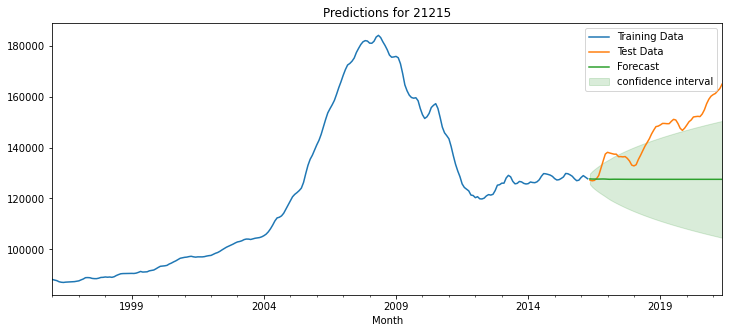
<IPython.core.display.Markdown object>
| Metric | RMSE | R2 | Thiel's U |
|---|---|---|---|
| Value | 19710.468 | -2.913 | 15.011 |
- TRAINING FINAL MODEL:
/opt/anaconda3/envs/learn-env/lib/python3.6/site-packages/statsmodels/tsa/statespace/sarimax.py:963: UserWarning:
Non-stationary starting autoregressive parameters found. Using zeros as starting parameters.
| Dep. Variable: | 21215 | No. Observations: | 305 |
|---|---|---|---|
| Model: | SARIMAX(2, 1, 3)x(1, 0, [], 12) | Log Likelihood | -2573.009 |
| Date: | Fri, 02 Jul 2021 | AIC | 5160.019 |
| Time: | 13:03:51 | BIC | 5186.038 |
| Sample: | 01-31-1996 | HQIC | 5170.427 |
| - 05-31-2021 | |||
| Covariance Type: | opg |
| coef | std err | z | P>|z| | [0.025 | 0.975] | |
|---|---|---|---|---|---|---|
| ar.L1 | 0.0898 | 1562.977 | 5.74e-05 | 1.000 | -3063.289 | 3063.469 |
| ar.L2 | 0.3893 | 1047.912 | 0.000 | 1.000 | -2053.480 | 2054.259 |
| ma.L1 | -1.2606 | 1562.976 | -0.001 | 0.999 | -3064.637 | 3062.116 |
| ma.L2 | -1.0406 | 2877.819 | -0.000 | 1.000 | -5641.463 | 5639.382 |
| ma.L3 | 0.0166 | 44.582 | 0.000 | 1.000 | -87.363 | 87.396 |
| ar.S.L12 | -0.0116 | 0.032 | -0.361 | 0.718 | -0.074 | 0.051 |
| sigma2 | 3.296e+05 | 50.948 | 6470.289 | 0.000 | 3.3e+05 | 3.3e+05 |
| Ljung-Box (Q): | 645.94 | Jarque-Bera (JB): | 235.09 |
|---|---|---|---|
| Prob(Q): | 0.00 | Prob(JB): | 0.00 |
| Heteroskedasticity (H): | 1.40 | Skew: | -1.10 |
| Prob(H) (two-sided): | 0.09 | Kurtosis: | 6.70 |
Warnings:
[1] Covariance matrix calculated using the outer product of gradients (complex-step).
[2] Covariance matrix is singular or near-singular, with condition number 4.08e+19. Standard errors may be unstable.
| Investment Cost | Sale Date | Forecast | Lower CI | Upper CI | |
|---|---|---|---|---|---|
| 21215 | 165217.671 | 2023-05-31 | 0.329 | -7.595 | 8.253 |
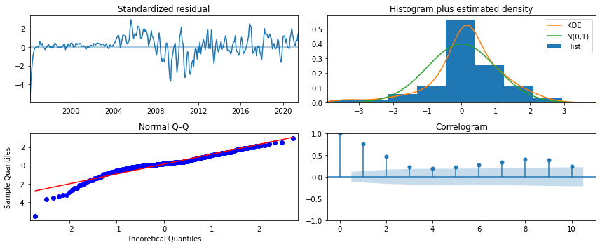
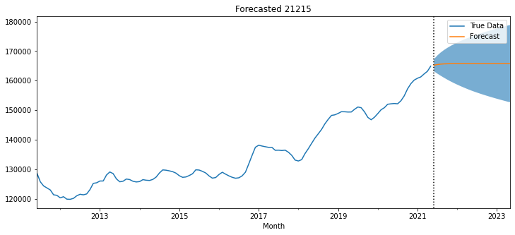
| Investment Cost | Sale Date | Forecast | Lower CI | Upper CI | |
|---|---|---|---|---|---|
| 21215 | 165217.671 | 2023-05-31 | 0.329 | -7.595 | 8.253 |
============================================================
[i] GRIDSEARCHING FOR 21215:
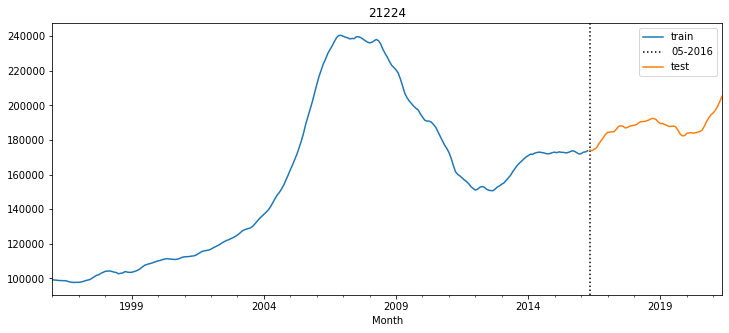
/opt/anaconda3/envs/learn-env/lib/python3.6/site-packages/statsmodels/tsa/statespace/sarimax.py:975: UserWarning:
Non-invertible starting MA parameters found. Using zeros as starting parameters.
/opt/anaconda3/envs/learn-env/lib/python3.6/site-packages/pmdarima/arima/_auto_solvers.py:437: ModelFitWarning:
Error fitting ARIMA(1,1,0)(2,0,1)[12] intercept (if you do not want to see these warnings, run with error_action="ignore").
Traceback:
Traceback (most recent call last):
File "/opt/anaconda3/envs/learn-env/lib/python3.6/site-packages/pmdarima/arima/_auto_solvers.py", line 421, in _fit_candidate_model
fit.fit(x, exogenous=xreg, **fit_params)
File "/opt/anaconda3/envs/learn-env/lib/python3.6/site-packages/pmdarima/arima/arima.py", line 472, in fit
self._fit(y, exogenous, **fit_args)
File "/opt/anaconda3/envs/learn-env/lib/python3.6/site-packages/pmdarima/arima/arima.py", line 397, in _fit
fit, self.arima_res_ = _fit_wrapper()
File "/opt/anaconda3/envs/learn-env/lib/python3.6/site-packages/pmdarima/arima/arima.py", line 389, in _fit_wrapper
**fit_args)
File "/opt/anaconda3/envs/learn-env/lib/python3.6/site-packages/statsmodels/tsa/statespace/mlemodel.py", line 659, in fit
skip_hessian=True, **kwargs)
File "/opt/anaconda3/envs/learn-env/lib/python3.6/site-packages/statsmodels/base/model.py", line 526, in fit
full_output=full_output)
File "/opt/anaconda3/envs/learn-env/lib/python3.6/site-packages/statsmodels/base/optimizer.py", line 218, in _fit
hess=hessian)
File "/opt/anaconda3/envs/learn-env/lib/python3.6/site-packages/statsmodels/base/optimizer.py", line 440, in _fit_lbfgs
**extra_kwargs)
File "/Users/jamesirving/.local/lib/python3.6/site-packages/scipy/optimize/lbfgsb.py", line 198, in fmin_l_bfgs_b
**opts)
File "/Users/jamesirving/.local/lib/python3.6/site-packages/scipy/optimize/lbfgsb.py", line 360, in _minimize_lbfgsb
f, g = func_and_grad(x)
File "/Users/jamesirving/.local/lib/python3.6/site-packages/scipy/optimize/_differentiable_functions.py", line 200, in fun_and_grad
self._update_fun()
File "/Users/jamesirving/.local/lib/python3.6/site-packages/scipy/optimize/_differentiable_functions.py", line 166, in _update_fun
self._update_fun_impl()
File "/Users/jamesirving/.local/lib/python3.6/site-packages/scipy/optimize/_differentiable_functions.py", line 73, in update_fun
self.f = fun_wrapped(self.x)
File "/Users/jamesirving/.local/lib/python3.6/site-packages/scipy/optimize/_differentiable_functions.py", line 70, in fun_wrapped
return fun(x, *args)
File "/opt/anaconda3/envs/learn-env/lib/python3.6/site-packages/statsmodels/base/model.py", line 500, in f
return -self.loglike(params, *args) / nobs
File "/opt/anaconda3/envs/learn-env/lib/python3.6/site-packages/statsmodels/tsa/statespace/mlemodel.py", line 889, in loglike
loglike = self.ssm.loglike(complex_step=complex_step, **kwargs)
File "/opt/anaconda3/envs/learn-env/lib/python3.6/site-packages/statsmodels/tsa/statespace/kalman_filter.py", line 977, in loglike
kfilter = self._filter(**kwargs)
File "/opt/anaconda3/envs/learn-env/lib/python3.6/site-packages/statsmodels/tsa/statespace/kalman_filter.py", line 897, in _filter
self._initialize_state(prefix=prefix, complex_step=complex_step)
File "/opt/anaconda3/envs/learn-env/lib/python3.6/site-packages/statsmodels/tsa/statespace/representation.py", line 950, in _initialize_state
complex_step=complex_step)
File "statsmodels/tsa/statespace/_representation.pyx", line 1341, in statsmodels.tsa.statespace._representation.dStatespace.initialize
File "statsmodels/tsa/statespace/_representation.pyx", line 1334, in statsmodels.tsa.statespace._representation.dStatespace.initialize
File "statsmodels/tsa/statespace/_initialization.pyx", line 288, in statsmodels.tsa.statespace._initialization.dInitialization.initialize
File "statsmodels/tsa/statespace/_initialization.pyx", line 406, in statsmodels.tsa.statespace._initialization.dInitialization.initialize_stationary_stationary_cov
File "statsmodels/tsa/statespace/_tools.pyx", line 1206, in statsmodels.tsa.statespace._tools._dsolve_discrete_lyapunov
numpy.linalg.LinAlgError: LU decomposition error.
/opt/anaconda3/envs/learn-env/lib/python3.6/site-packages/statsmodels/tsa/statespace/sarimax.py:975: UserWarning:
Non-invertible starting MA parameters found. Using zeros as starting parameters.
/opt/anaconda3/envs/learn-env/lib/python3.6/site-packages/statsmodels/tsa/statespace/sarimax.py:975: UserWarning:
Non-invertible starting MA parameters found. Using zeros as starting parameters.
/opt/anaconda3/envs/learn-env/lib/python3.6/site-packages/statsmodels/base/model.py:568: ConvergenceWarning:
Maximum Likelihood optimization failed to converge. Check mle_retvals
| Dep. Variable: | 21224 | No. Observations: | 244 |
|---|---|---|---|
| Model: | SARIMAX(2, 1, 2) | Log Likelihood | -2089.648 |
| Date: | Fri, 02 Jul 2021 | AIC | 4189.295 |
| Time: | 13:05:35 | BIC | 4206.760 |
| Sample: | 01-31-1996 | HQIC | 4196.330 |
| - 04-30-2016 | |||
| Covariance Type: | opg |
| coef | std err | z | P>|z| | [0.025 | 0.975] | |
|---|---|---|---|---|---|---|
| ar.L1 | 1.3403 | 0.042 | 31.647 | 0.000 | 1.257 | 1.423 |
| ar.L2 | -0.3875 | 0.028 | -13.658 | 0.000 | -0.443 | -0.332 |
| ma.L1 | -3.2081 | 0.091 | -35.307 | 0.000 | -3.386 | -3.030 |
| ma.L2 | 2.0128 | 0.099 | 20.413 | 0.000 | 1.820 | 2.206 |
| sigma2 | 2.562e+05 | 7.82e-07 | 3.28e+11 | 0.000 | 2.56e+05 | 2.56e+05 |
| Ljung-Box (Q): | 1174.51 | Jarque-Bera (JB): | 27.95 |
|---|---|---|---|
| Prob(Q): | 0.00 | Prob(JB): | 0.00 |
| Heteroskedasticity (H): | 0.84 | Skew: | -0.38 |
| Prob(H) (two-sided): | 0.44 | Kurtosis: | 4.48 |
Warnings:
[1] Covariance matrix calculated using the outer product of gradients (complex-step).
[2] Covariance matrix is singular or near-singular, with condition number 9.38e+26. Standard errors may be unstable.
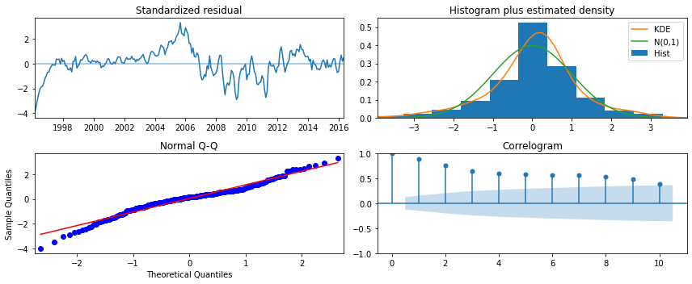
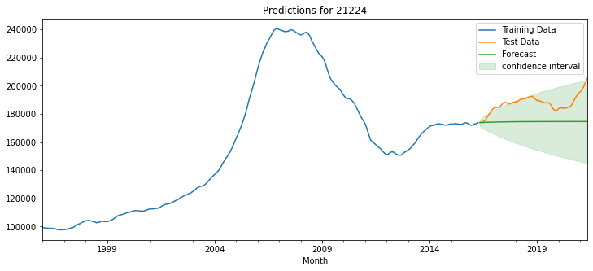
<IPython.core.display.Markdown object>
| Metric | RMSE | R2 | Thiel's U |
|---|---|---|---|
| Value | 14184.415 | -4.673 | 11.589 |
- TRAINING FINAL MODEL:
/opt/anaconda3/envs/learn-env/lib/python3.6/site-packages/statsmodels/base/model.py:568: ConvergenceWarning:
Maximum Likelihood optimization failed to converge. Check mle_retvals
| Dep. Variable: | 21224 | No. Observations: | 305 |
|---|---|---|---|
| Model: | SARIMAX(2, 1, 2) | Log Likelihood | -2603.992 |
| Date: | Fri, 02 Jul 2021 | AIC | 5217.985 |
| Time: | 13:05:37 | BIC | 5236.570 |
| Sample: | 01-31-1996 | HQIC | 5225.419 |
| - 05-31-2021 | |||
| Covariance Type: | opg |
| coef | std err | z | P>|z| | [0.025 | 0.975] | |
|---|---|---|---|---|---|---|
| ar.L1 | 1.9234 | 0.014 | 140.374 | 0.000 | 1.897 | 1.950 |
| ar.L2 | -0.9253 | 0.013 | -72.297 | 0.000 | -0.950 | -0.900 |
| ma.L1 | -1.8496 | 0.016 | -115.843 | 0.000 | -1.881 | -1.818 |
| ma.L2 | 0.8526 | 0.015 | 57.956 | 0.000 | 0.824 | 0.881 |
| sigma2 | 9.888e+05 | 1.68e-09 | 5.89e+14 | 0.000 | 9.89e+05 | 9.89e+05 |
| Ljung-Box (Q): | 943.56 | Jarque-Bera (JB): | 110.93 |
|---|---|---|---|
| Prob(Q): | 0.00 | Prob(JB): | 0.00 |
| Heteroskedasticity (H): | 0.62 | Skew: | -0.71 |
| Prob(H) (two-sided): | 0.02 | Kurtosis: | 5.60 |
Warnings:
[1] Covariance matrix calculated using the outer product of gradients (complex-step).
[2] Covariance matrix is singular or near-singular, with condition number 3.89e+30. Standard errors may be unstable.
| Investment Cost | Sale Date | Forecast | Lower CI | Upper CI | |
|---|---|---|---|---|---|
| 21224 | 206167.371 | 2023-05-31 | 4.22 | -3.045 | 11.484 |
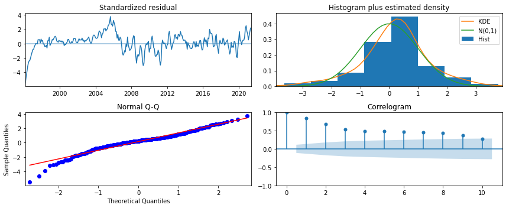
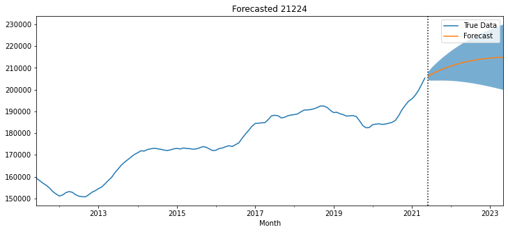
| Investment Cost | Sale Date | Forecast | Lower CI | Upper CI | |
|---|---|---|---|---|---|
| 21224 | 206167.371 | 2023-05-31 | 4.22 | -3.045 | 11.484 |
============================================================
[i] GRIDSEARCHING FOR 21224:
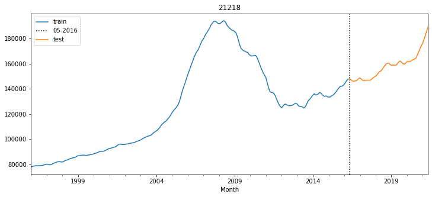
/opt/anaconda3/envs/learn-env/lib/python3.6/site-packages/statsmodels/tsa/statespace/sarimax.py:975: UserWarning:
Non-invertible starting MA parameters found. Using zeros as starting parameters.
/opt/anaconda3/envs/learn-env/lib/python3.6/site-packages/statsmodels/tsa/statespace/sarimax.py:963: UserWarning:
Non-stationary starting autoregressive parameters found. Using zeros as starting parameters.
/opt/anaconda3/envs/learn-env/lib/python3.6/site-packages/statsmodels/tsa/statespace/sarimax.py:963: UserWarning:
Non-stationary starting autoregressive parameters found. Using zeros as starting parameters.
/opt/anaconda3/envs/learn-env/lib/python3.6/site-packages/statsmodels/base/model.py:568: ConvergenceWarning:
Maximum Likelihood optimization failed to converge. Check mle_retvals
/opt/anaconda3/envs/learn-env/lib/python3.6/site-packages/statsmodels/tsa/statespace/sarimax.py:963: UserWarning:
Non-stationary starting autoregressive parameters found. Using zeros as starting parameters.
/opt/anaconda3/envs/learn-env/lib/python3.6/site-packages/statsmodels/tsa/statespace/sarimax.py:963: UserWarning:
Non-stationary starting autoregressive parameters found. Using zeros as starting parameters.
/opt/anaconda3/envs/learn-env/lib/python3.6/site-packages/statsmodels/base/model.py:568: ConvergenceWarning:
Maximum Likelihood optimization failed to converge. Check mle_retvals
/opt/anaconda3/envs/learn-env/lib/python3.6/site-packages/statsmodels/tsa/statespace/sarimax.py:963: UserWarning:
Non-stationary starting autoregressive parameters found. Using zeros as starting parameters.
/opt/anaconda3/envs/learn-env/lib/python3.6/site-packages/statsmodels/tsa/statespace/sarimax.py:963: UserWarning:
Non-stationary starting autoregressive parameters found. Using zeros as starting parameters.
/opt/anaconda3/envs/learn-env/lib/python3.6/site-packages/statsmodels/base/model.py:568: ConvergenceWarning:
Maximum Likelihood optimization failed to converge. Check mle_retvals
/opt/anaconda3/envs/learn-env/lib/python3.6/site-packages/statsmodels/tsa/statespace/sarimax.py:963: UserWarning:
Non-stationary starting autoregressive parameters found. Using zeros as starting parameters.
/opt/anaconda3/envs/learn-env/lib/python3.6/site-packages/statsmodels/tsa/statespace/sarimax.py:963: UserWarning:
Non-stationary starting autoregressive parameters found. Using zeros as starting parameters.
/opt/anaconda3/envs/learn-env/lib/python3.6/site-packages/statsmodels/tsa/statespace/sarimax.py:975: UserWarning:
Non-invertible starting MA parameters found. Using zeros as starting parameters.
/opt/anaconda3/envs/learn-env/lib/python3.6/site-packages/statsmodels/base/model.py:568: ConvergenceWarning:
Maximum Likelihood optimization failed to converge. Check mle_retvals
/opt/anaconda3/envs/learn-env/lib/python3.6/site-packages/statsmodels/tsa/statespace/sarimax.py:963: UserWarning:
Non-stationary starting autoregressive parameters found. Using zeros as starting parameters.
/opt/anaconda3/envs/learn-env/lib/python3.6/site-packages/statsmodels/base/model.py:568: ConvergenceWarning:
Maximum Likelihood optimization failed to converge. Check mle_retvals
/opt/anaconda3/envs/learn-env/lib/python3.6/site-packages/statsmodels/base/model.py:568: ConvergenceWarning:
Maximum Likelihood optimization failed to converge. Check mle_retvals
| Dep. Variable: | 21218 | No. Observations: | 244 |
|---|---|---|---|
| Model: | SARIMAX(3, 1, 3)x(0, 0, [1], 12) | Log Likelihood | -2098.252 |
| Date: | Fri, 02 Jul 2021 | AIC | 4212.504 |
| Time: | 13:09:04 | BIC | 4240.449 |
| Sample: | 01-31-1996 | HQIC | 4223.760 |
| - 04-30-2016 | |||
| Covariance Type: | opg |
| coef | std err | z | P>|z| | [0.025 | 0.975] | |
|---|---|---|---|---|---|---|
| ar.L1 | 0.2763 | 0.204 | 1.352 | 0.176 | -0.124 | 0.677 |
| ar.L2 | 0.7340 | 0.264 | 2.782 | 0.005 | 0.217 | 1.251 |
| ar.L3 | -0.1028 | 0.099 | -1.040 | 0.298 | -0.297 | 0.091 |
| ma.L1 | 0.0228 | 0.204 | 0.112 | 0.911 | -0.376 | 0.422 |
| ma.L2 | -0.6519 | 0.208 | -3.131 | 0.002 | -1.060 | -0.244 |
| ma.L3 | -0.0651 | 0.060 | -1.076 | 0.282 | -0.184 | 0.053 |
| ma.S.L12 | -0.1213 | 0.015 | -7.866 | 0.000 | -0.152 | -0.091 |
| sigma2 | 2.706e+05 | 1e+04 | 26.974 | 0.000 | 2.51e+05 | 2.9e+05 |
| Ljung-Box (Q): | 338.19 | Jarque-Bera (JB): | 832.87 |
|---|---|---|---|
| Prob(Q): | 0.00 | Prob(JB): | 0.00 |
| Heteroskedasticity (H): | 1.32 | Skew: | -1.61 |
| Prob(H) (two-sided): | 0.21 | Kurtosis: | 11.48 |
Warnings:
[1] Covariance matrix calculated using the outer product of gradients (complex-step).
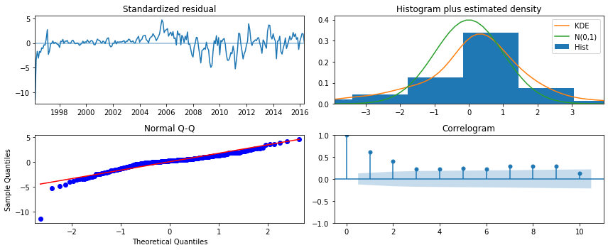
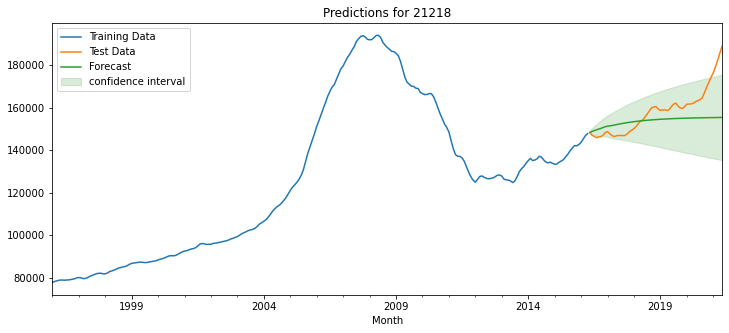
<IPython.core.display.Markdown object>
| Metric | RMSE | R2 | Thiel's U |
|---|---|---|---|
| Value | 9992.361 | 0.068 | 7.516 |
- TRAINING FINAL MODEL:
/opt/anaconda3/envs/learn-env/lib/python3.6/site-packages/statsmodels/tsa/statespace/sarimax.py:963: UserWarning:
Non-stationary starting autoregressive parameters found. Using zeros as starting parameters.
/opt/anaconda3/envs/learn-env/lib/python3.6/site-packages/statsmodels/base/model.py:568: ConvergenceWarning:
Maximum Likelihood optimization failed to converge. Check mle_retvals
| Dep. Variable: | 21218 | No. Observations: | 305 |
|---|---|---|---|
| Model: | SARIMAX(3, 1, 3)x(0, 0, [1], 12) | Log Likelihood | -2606.045 |
| Date: | Fri, 02 Jul 2021 | AIC | 5228.090 |
| Time: | 13:09:07 | BIC | 5257.827 |
| Sample: | 01-31-1996 | HQIC | 5239.986 |
| - 05-31-2021 | |||
| Covariance Type: | opg |
| coef | std err | z | P>|z| | [0.025 | 0.975] | |
|---|---|---|---|---|---|---|
| ar.L1 | 0.4638 | 0.169 | 2.736 | 0.006 | 0.132 | 0.796 |
| ar.L2 | 0.4039 | 0.246 | 1.641 | 0.101 | -0.078 | 0.886 |
| ar.L3 | 0.0407 | 0.097 | 0.420 | 0.674 | -0.149 | 0.231 |
| ma.L1 | -0.1433 | 0.169 | -0.847 | 0.397 | -0.475 | 0.188 |
| ma.L2 | -0.3665 | 0.197 | -1.857 | 0.063 | -0.753 | 0.020 |
| ma.L3 | -0.1753 | 0.055 | -3.160 | 0.002 | -0.284 | -0.067 |
| ma.S.L12 | -0.1418 | 0.011 | -12.842 | 0.000 | -0.163 | -0.120 |
| sigma2 | 2.886e+05 | 1.09e+04 | 26.360 | 0.000 | 2.67e+05 | 3.1e+05 |
| Ljung-Box (Q): | 322.12 | Jarque-Bera (JB): | 1794.71 |
|---|---|---|---|
| Prob(Q): | 0.00 | Prob(JB): | 0.00 |
| Heteroskedasticity (H): | 0.97 | Skew: | -1.81 |
| Prob(H) (two-sided): | 0.87 | Kurtosis: | 14.34 |
Warnings:
[1] Covariance matrix calculated using the outer product of gradients (complex-step).
| Investment Cost | Sale Date | Forecast | Lower CI | Upper CI | |
|---|---|---|---|---|---|
| 21218 | 190772.459 | 2023-05-31 | 6.953 | 1.132 | 12.774 |
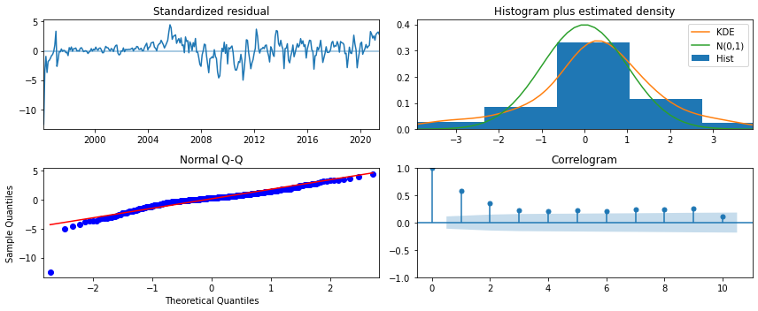
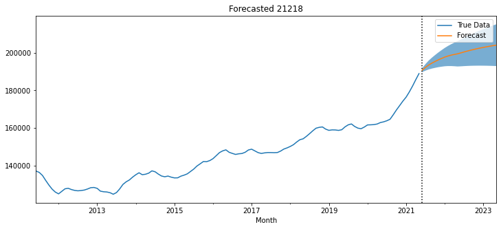
| Investment Cost | Sale Date | Forecast | Lower CI | Upper CI | |
|---|---|---|---|---|---|
| 21218 | 190772.459 | 2023-05-31 | 6.953 | 1.132 | 12.774 |
RESULTS.keys()
dict_keys(['21201', '21202', '21215', '21224', '21218'])
RESULTS['21201'].keys()
dict_keys(['tts_fig', 'final_model', 'forecast', 'roi'])
RESULTS['21201']['tts_fig']
display(RESULTS['21201']['forecast'])
RESULTS['21201']['roi']
| Investment Cost | Sale Date | Forecast | Lower CI | Upper CI | |
|---|---|---|---|---|---|
| 21201 | 207108.276 | 2023-05-31 | 2.101 | -8.171 | 12.374 |
display(RESULTS['21201']['forecast'])
print()
## concatenating roi dfs for each zipcode into 1 df
roi_dfs = []
for zipname, zipdict in RESULTS.items():
roi_dfs.append(zipdict['roi'])
overall_rois = pd.concat(roi_dfs)
overall_rois.sort_values('Forecast',ascending=False, inplace=True)
overall_rois.drop(columns='Sale Date',inplace=True)
overall_rois.style.background_gradient(subset=['Investment Cost','Forecast'],
cmap='Greens').set_caption('Top Zipcodes by ROI')
| Investment Cost | Forecast | Lower CI | Upper CI | |
|---|---|---|---|---|
| 21218 | 190772.459 | 6.953 | 1.132 | 12.774 |
| 21224 | 206167.371 | 4.220 | -3.045 | 11.484 |
| 21201 | 207108.276 | 2.101 | -8.171 | 12.374 |
| 21202 | 237262.441 | 0.412 | -7.029 | 7.854 |
| 21215 | 165217.671 | 0.329 | -7.595 | 8.253 |
## looping through dict to save the forecast figures
import os
fig_folder = "./images/"
os.makedirs(fig_folder,exist_ok=True)
for zipcode in RESULTS:
fig = RESULTS[zipcode]['forecast']
fig.savefig(f"{fig_folder}forecast_for_{zipcode}.png",dpi=300)